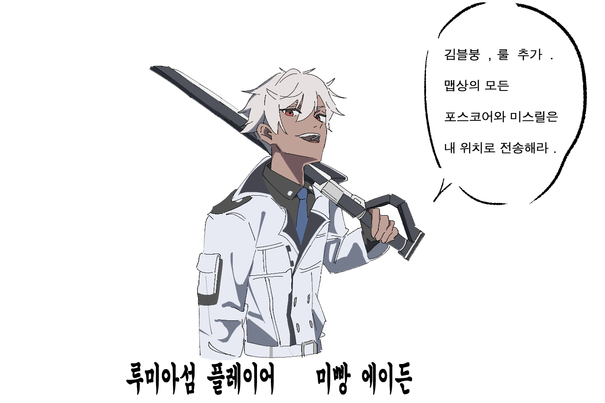
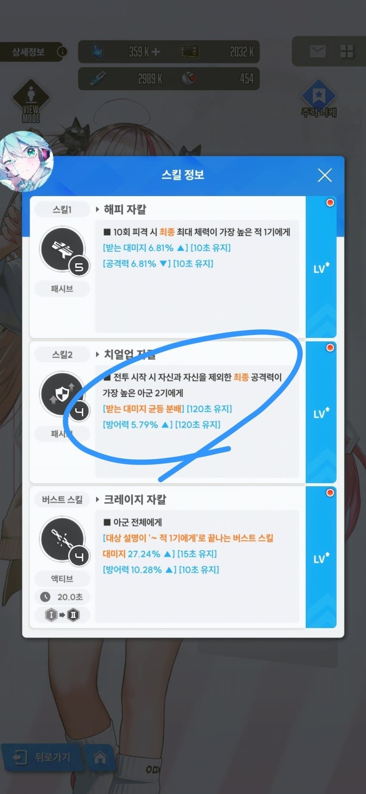
자칼의 2스에는 최종공 높은 2명이랑 자칼본인한테 링크를걸고 받는데미지 균등분배 효과가 있음
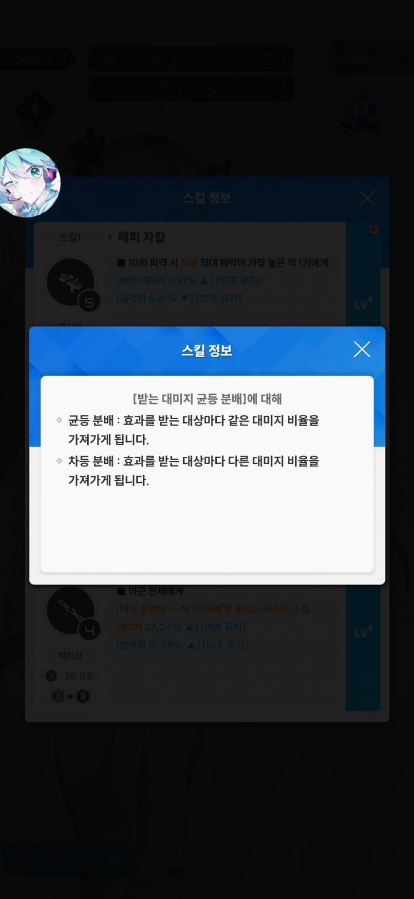
말그대로 모두 같은 데미지를 나눠받는다는거임
만약 자칼이 15의 데미지로 맞았다= 자칼과 링크1 링크2가 5의 데미지씩 받는다
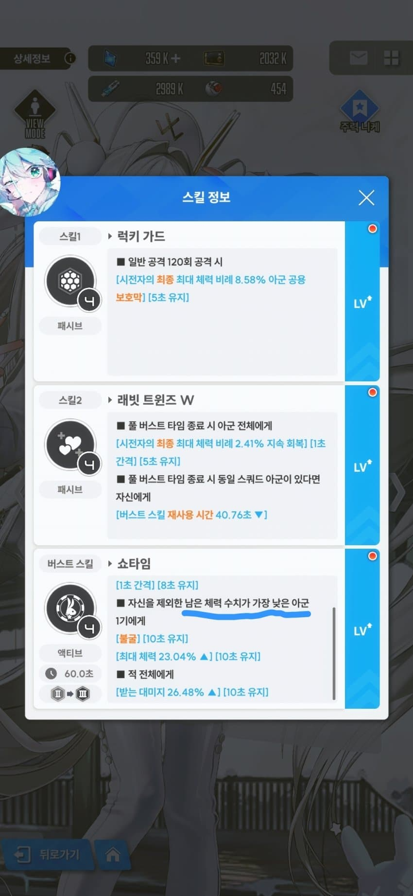
그리고 블랑은 버스트발동시 남은 체력 수치가 가장 낮은쪽에 불굴을 걸어주는데
이게 체력 비율이 아니라 수치임 몇%가 남앗다가 아니고 얼마만큼의 체력이 남앗냐를따지는것
그래서
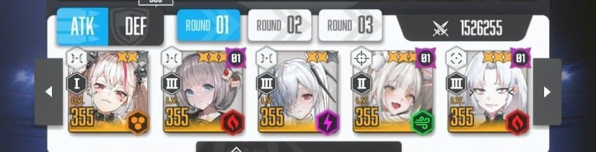
자블덱은 통상적으로 1번자칼, 2번 불굴받을놈, 3번 클이든과같은 방어형니케 (체력이높아서 불굴튈확률이적음), 4번 블랑(이렇게하면 상대택스티한테 블랑이터지는참사를 막을수잇음) 5번 자칼링크받은놈
이렇게 둠으로서
자칼이랑 불굴딜러가 때려맞으면서 데미지를 나눠받고
블랑 버스트로 불굴을 받은 딜러는 자가3버를 쓰고 지속적으로 딜을 하는 매커니즘임
내가 신데를 둔건 상대 자블베에 맞대고 블랑을 늦게쓰기위함임 = 불굴이 더 늦게까지켜져있어서 이김
그럼 이제 불굴을 어케 조절해주냐? 인데
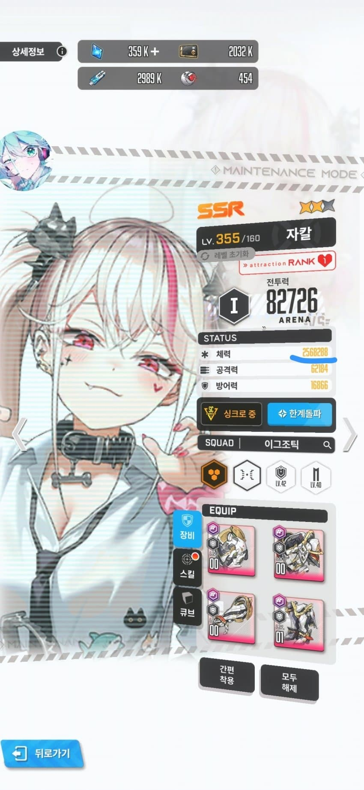
자칼 체력 2568288
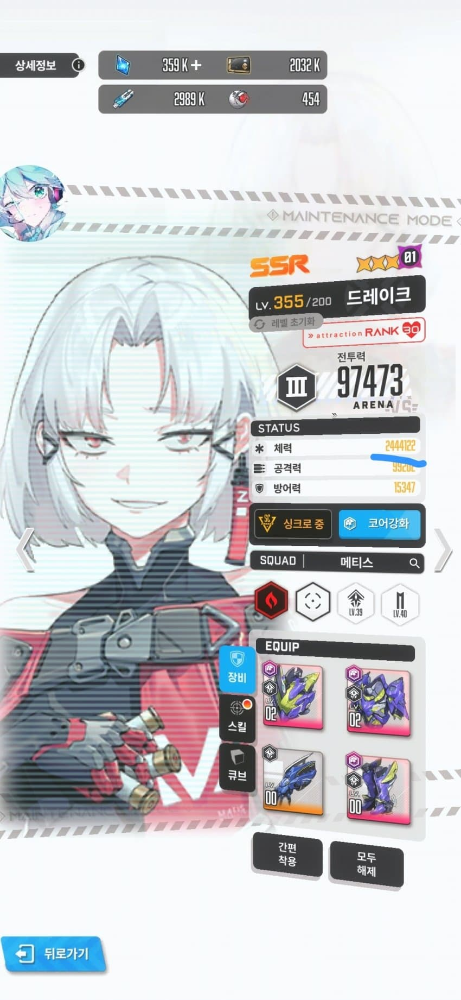
드황 체력 2444122
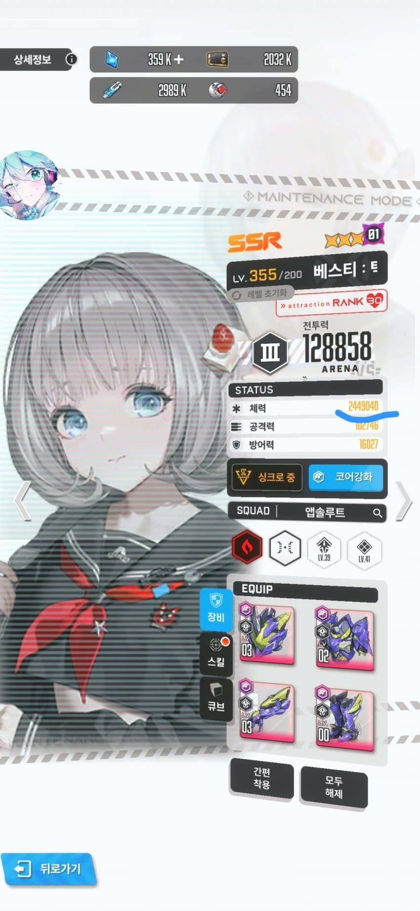
베스티 체력 2449040임
이 셋은 모든 데미지를 똑같이 받으니까
남은 체력 수치< 가 가장 낮으려면 최대 체력이 낮아야겠지?
이상태라면 최대체력이 가장 낮은 드황이 불굴을 받고 베스티는 죽어버리는 사고가 발생하는거임
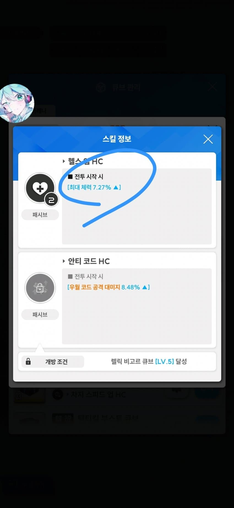
그래서 우리는 1번 자칼과 5번 링크캐릭에 체력큐브를 끼워주는거임
최대체력 7.27%를 올려주고 시작하기때문에 이렇게 되면 불굴이 베스티한테 정상적으로 들어가게되는것
"근데 어차피 링크면 123을 자칼 링크 링크로 하면 블랑도 안맞고 괜찮은거아닌가?" ->
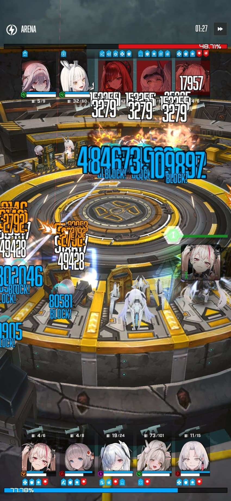
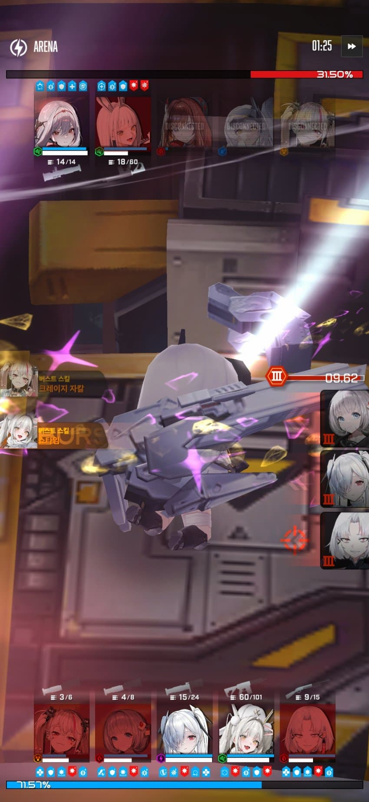
그럼 죽어(진짜임)
베스티는 1~3번을 타격하는데
세명이서 분배딜을 나눠받는다고 해도 결국 3배씩 맞는거기때문에 진짜 뒤짐
세줄요약
1. 자칼과 링크캐릭 둘은 모든 데미지를 정확히 3등분씩 나눠서 같이 맞으며
2. 불굴은 현재 체력수치가 낮은놈이 받기때문에
3. 불굴을 먹이고 싶은 딜러의 체력을 자칼과 타 링크캐보다 낮게 맞춰주어야 한다